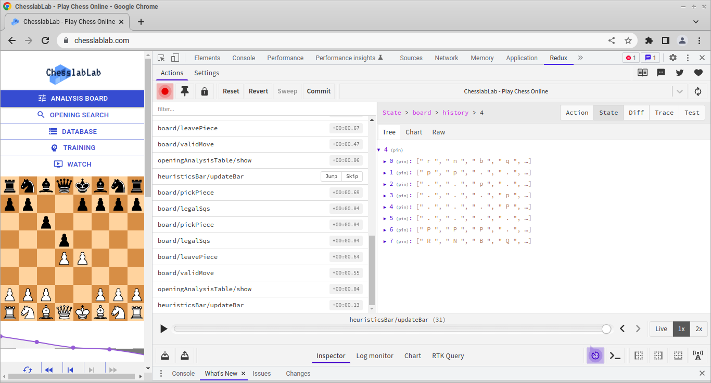

Sept 12, 2022 by Jordi Bassaganas
Storing Multiple Refs in an Array With React's useRef() Hook
Let's store the refs in an associative array
Photo by Val Tievsky on UnsplashIf you're a JavaScript developer learning React, at some point you'll want to create interactive animations with CSS and JavaScript. A plethora of amazing animations and transitions can be created easily with CSS.
However, JavaScript can definitely help when it comes to creating animations programmatically.
In plain JavaScript, you'll typically need to select DOM elements for
further processing which can be done in several ways using the
Document API.
Probably the most widely used methods to achieve this are getElementById()
and getElementsByClassName() but there are
a few more.
So far so good.
The thing is that recently, I had to animate the chess pieces of a React chessboard and initially was tempted to use the Document API. After some consideration I went for a solution based on plain JavaScript. I was impressed that my JS animation kind of worked, apparently. It wouldn't take long to realize that in some instances it seemed as if something wasn't working as expected.
Then I learned about React refs.
Selecting elements in React is a different story than with JavaScript mainly
because in React there's a thing called virtual DOM.
So what you'd typically do in JavaScript using getElementById() or
getElementsByClassName() in React should better be done with
the useRef
Hook along with the ref attribute.
The following example considers one element.
This way the targeted node can easily be accessed with the current
property. Now, what if you're dealing with an array of references rather
than with a single one? Well, in this case there's a solution based on arrays.
Let me show you an example. Attached below is the code of the Board
component of React Chess.
The working code is available on GitHub but I've removed some lines of code in this example for the sake of simplicity to focus on what really matters. A reference to each square and piece is being attached for further access by common utilities.
const sqsRef = useRef([]); const imgsRef = useRef([]);
The Board component loops through the state.board.history
array in search for specific elements to render the corresponding squares
and pieces.
The figure above shows how state.board.history looks like
after the Caro-Kann Defense 1.e4 c6 2.d4 d5 has been played in analysis mode.
It contains five elements at that stage each representing a chess position.
The 4th element is described below as an example.

A common utility called Ascii.fromIndexToAlgebraic() is used
to get a chess square in algebraic notation given a pair of matrix indices
i and j. The name of the chess square is then
stored in payload.sq.
ref={el => sqsRef.current[payload.sq] = el}
All 64 squares as well as the remaining pieces of the board can be referenced in a user-friendly way — a1, a2 and so on — via an associative array.
ref={el => imgsRef.current[payload.sq] = el}
Conclusion
An associative array is a convenient way to group multiple refs into a single
variable. This way, each element can be accessed through a user-friendly
name. In this example two arrays have been created. sqsRef is
to access the squares while imgsRef is to access the pieces.
The elements in both arrays are accessed in a user-friendly way by using a
chess square name in algebraic notation; for example, a1.